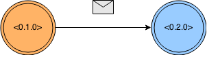

Ekosystem Erlanga
Wojciech Gawroński, 2015 © License: CC BY-ND 3.0 PL~ # whoami
Kto słyszał i spotkał się z Erlangiem?
Agenda
Dlaczego?
Kto i Co?
Jak?
Historia
Erlang VM === BEAM
TODO: interactive timeline
Event Drops
- 1982 - Ericsson Research Lab
- 1986 - First Erlang version
- 1988 - Erlang escapes the lab! PABX prototype.
- 1993 - Distribution added to the Erlang
- 1998 - AXD301, 99.9999999%, 1 MLOC
- 1998 - Erlang released as an Open Source
- 2005 - CouchDB
- 2007 - RabbitMQ
- 2007 - Erlang SMP support
- 2007 - Programming Erlang book, 1st edition
- 2008 - LFE
- 2009 - Riak
- 2012 - Elixir
- 2014 - Erlang 17.0
- 2014 - WhatsApp bought by Facebook for 19B
- 2014 - Elixir 1.0
30 years
Real problems, 30 years ago
- Distribution
- Concurrency
- Redundant hardware - more hardware, lesser probability of failure
- Fault tolerance
- Small RAM, slow CPU - lightweight processes
TODO: Image with calls to switch (1986), requests to server (2015) - similarities in behaviour and requirements
Still actual
Soft real-time systems
Other use cases
- IoT
- Distributed Systems - Databases
- Gaming, IM, Messaging
- Telecom, Networking, Mobile
- Trading, Banking, Gambling
- Not for everything - e.g. CPU bound operations
- Systems should be built from many different tool in order to leverage all benefits
- Reliable >> Fast
99,9999999% = 0,0315 s per year
The reliability figure wasn't supposed to measure the total time any part of AXD301 (project in question) was ever shut down for over 20 years. It represents the total time over those 20 years that the service provided by the AXD301 system was ever offline. Subtle difference.
Longest running Erlang system - 20 years (AXD301)
Visualizations
- Wybór języka - drogowskazy i rozstaj dróg
- mo.js - motion animation library
- d3.js tree - supervision tree
- d3.js puzzle - key concepts of Erlang VM related with scalabilty and reliability
- d3.js timeline - Erlang ecosystem history
- d3.js choices - different Erlang VM languages
- d3.js influence - error kernel and type of errors
The systems we were building are world wide distributed systems. Where’s the shared memory when you’ve got one node in London and another in Paris and another in Stockholm. There is no shared memory! Joe Armstrong
- Yahoo!, Facebook, bet365, Klarna, Last.fm
- T-Mobile, Motorola, Ericsson, Tail-F
- Twitter, WhatsApp, Wooga, DemonWare, Riot Games
- Rackspace, CloudBees, Amazon, Heroku, Github
- Hello Mike!

- Hello Joe!
- Share nothing
- Isolation
- Lightweight processes
- Let it crash === different approach to error handling
- No defensive programming, think about erroneous situations upfront.
- Build system that deals with errors, and not catches them.
- After dealing with error kernel, and building supervision you can ignore rest of errors.
- MODERN OS DESIGN -> ISOLATION, SMALL DOMAINS, ONE THING DOES NOT AFFECT WHOLE SYSTEM
- Resilience !== Reliability
- Build systems, not monolihts.
- Microservices with 30 years legacy (legacy in this case is a pride not pain)!
- Independence and isolation eases other stuff (e.g. GC).
- Built-in distribution and opaque implementation to all system.
- Sending message across cluster is not different than sending it to the process on the same VM.
Functional Programming
- Immutability
- Pattern Matchine
- Referential Transparency
- Recursion
- Tail Call Optimization
OTP
This OTP life- Small community (around 7k active paid programmers).
- Niche, expertise level required.
- It was harder to grasp by beginner (docs, knowledge, tooling) but it rapidly changes
- Behaviours, Supervisors, Applications, gen_server
- Darn cheap processes
- Observability - Links (HW inspired), Monitors
- INTROSPECTION - higher level of debugging, maintenance, remember 20 years not 1 year.
- 60% of time from a software lifecycle is spent in MAINTENANCE
- Write for maintainability, optimize tools which are opaque for your design (e.g. VM - it is a real Knuth quote origin)
- Supervisors - transient errors are most common (research, Joe Armstrong PhD thesis)
- Standard library
- Applications like components, again - building systems
- 
- Show supervision trees - animation (d3.js) d3 vertical tree
- Show erlubi visualization (gif, how it looks like)
- Erlang !== (Erlang VM === BEAM)
- Elixir
- LFE (Lisp Flavoured Erlang)
- Erlog, Luaerl, Joxa ...
- Syntax is not a real problem, huge mindset shift is a problem
- Concepts are harder to explain and grasp, especially for people that did not work with highly concurrent applications before
- IMPORTANT: Good platform only eases certain stuff, but still it requires significant knowledge and skills
- AXD301 was written in Erlang, but also in C - whole system was designed reliable and resilient since beginning so it required at first significant knowledge and skills.